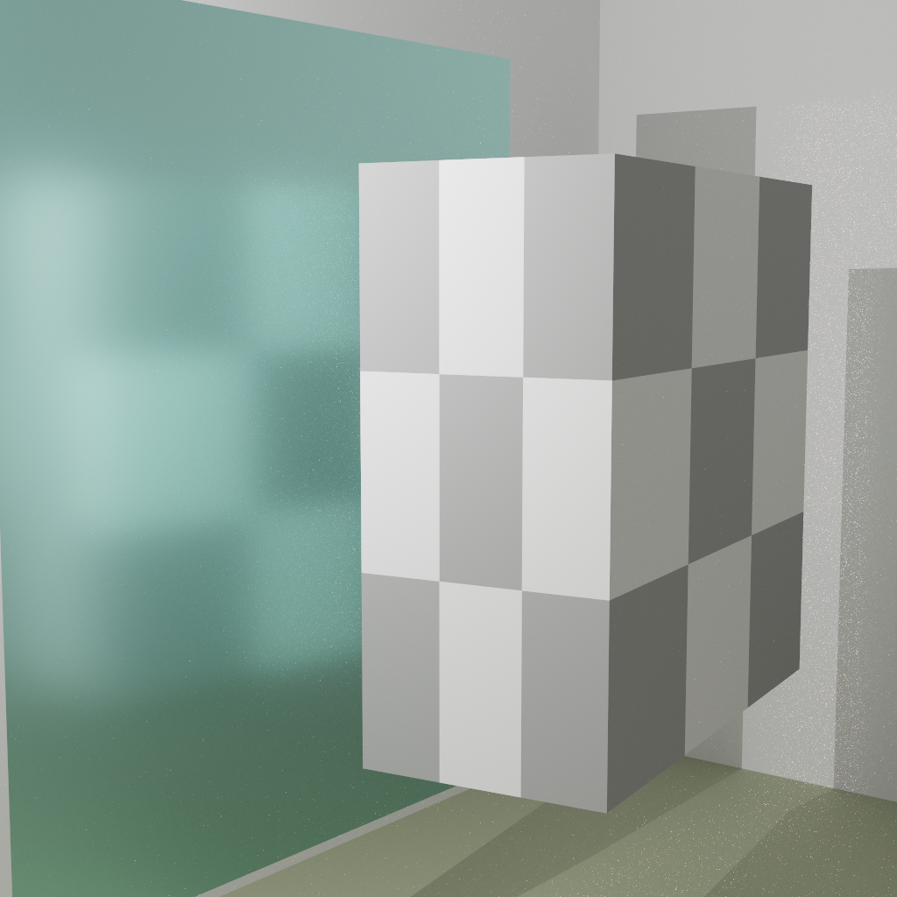
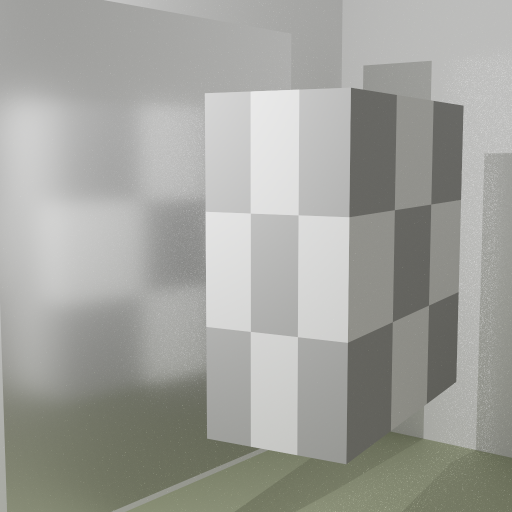
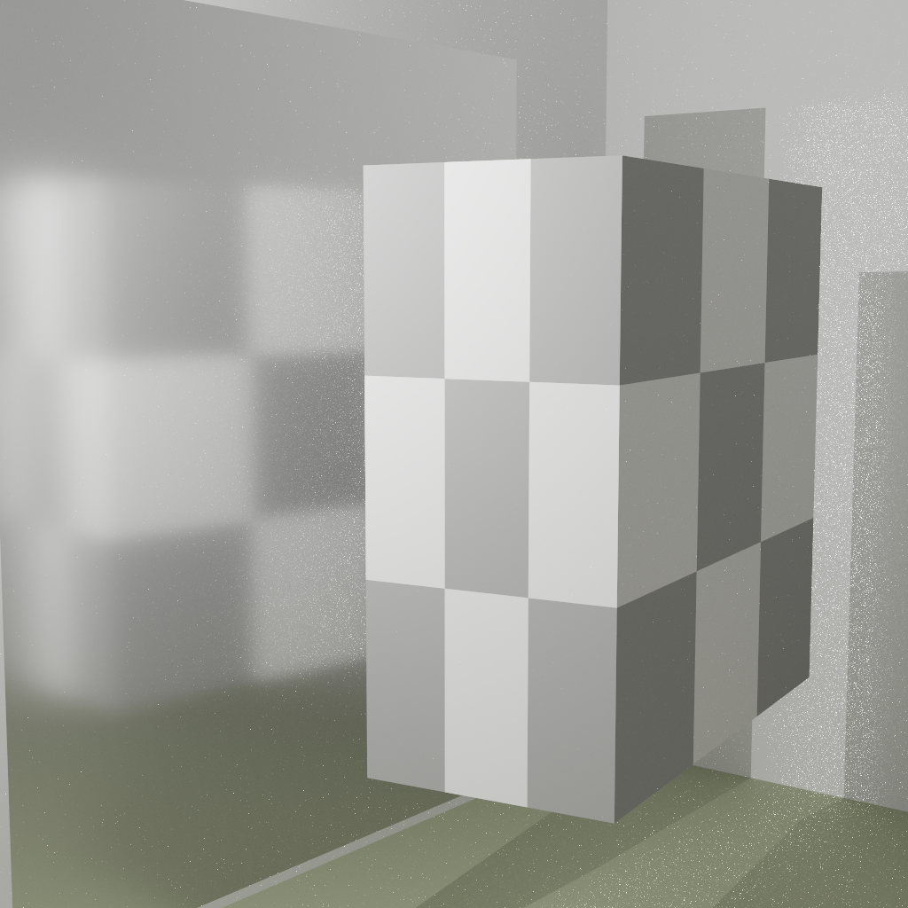
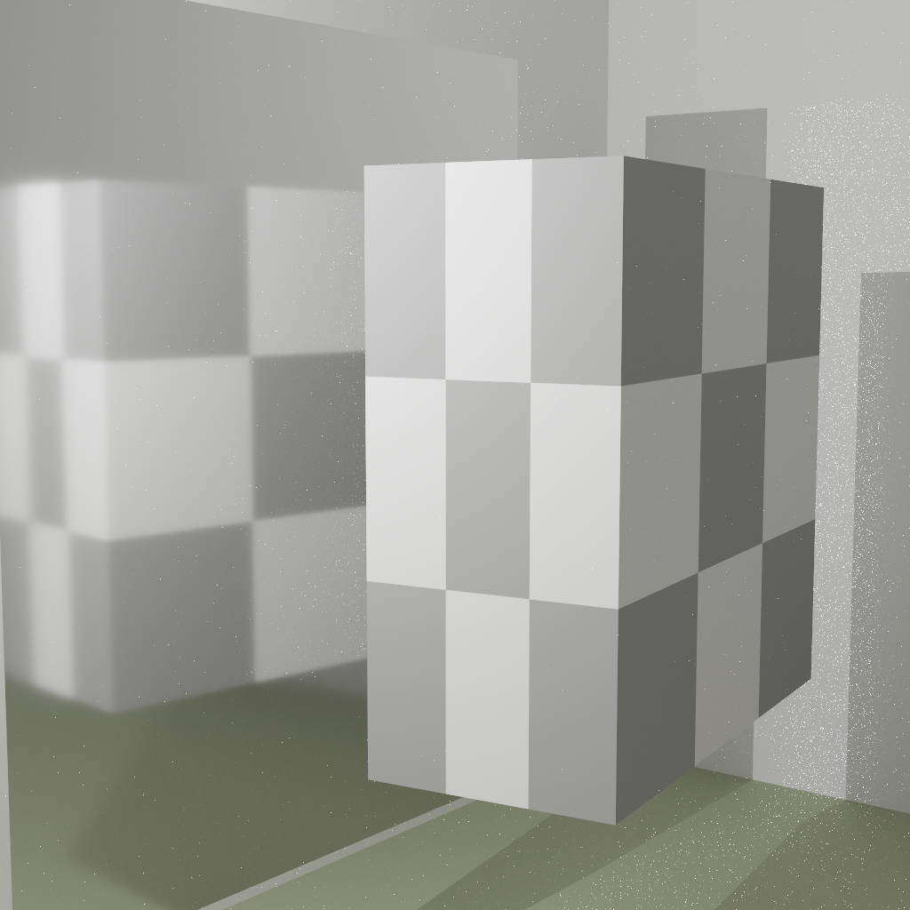
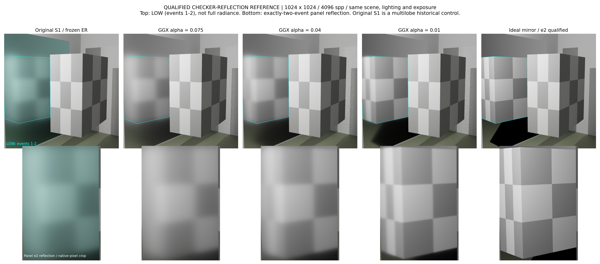
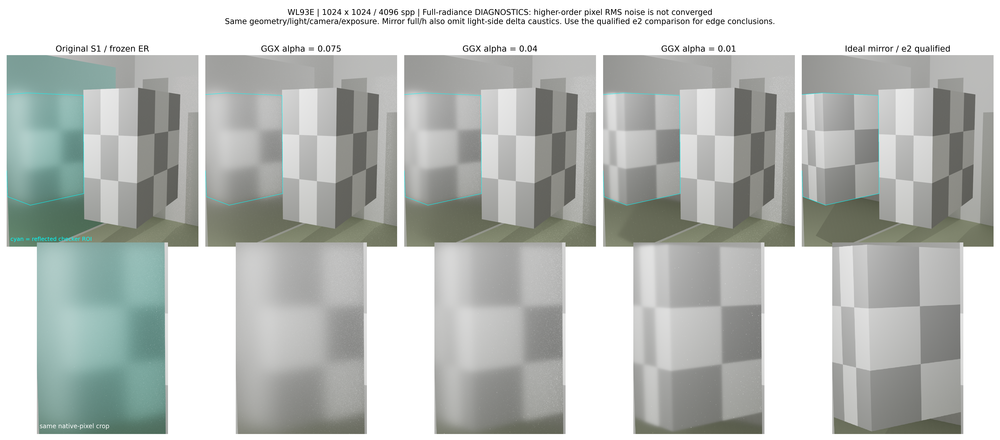
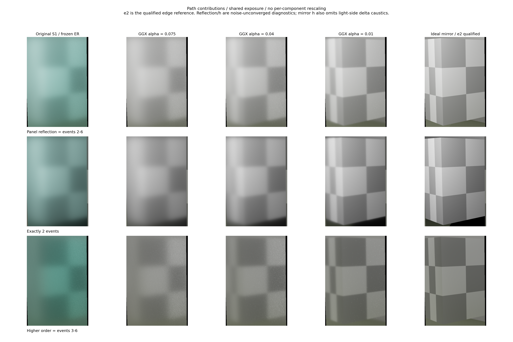
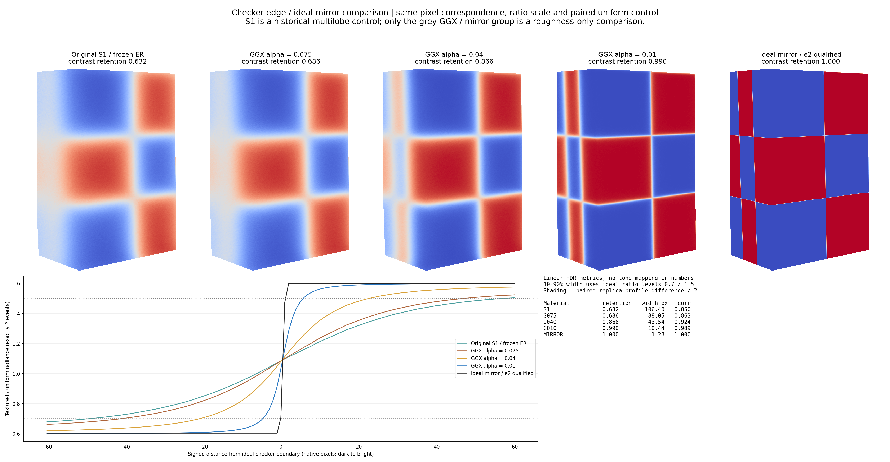
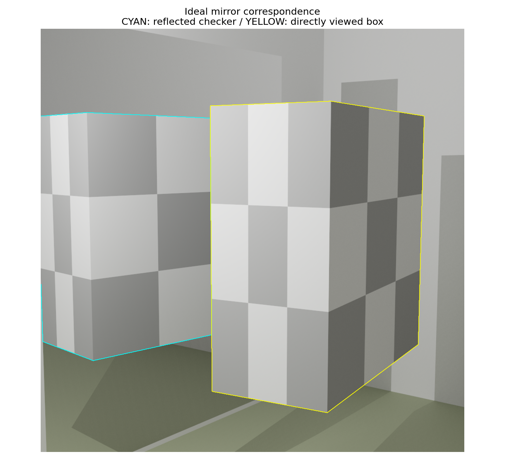
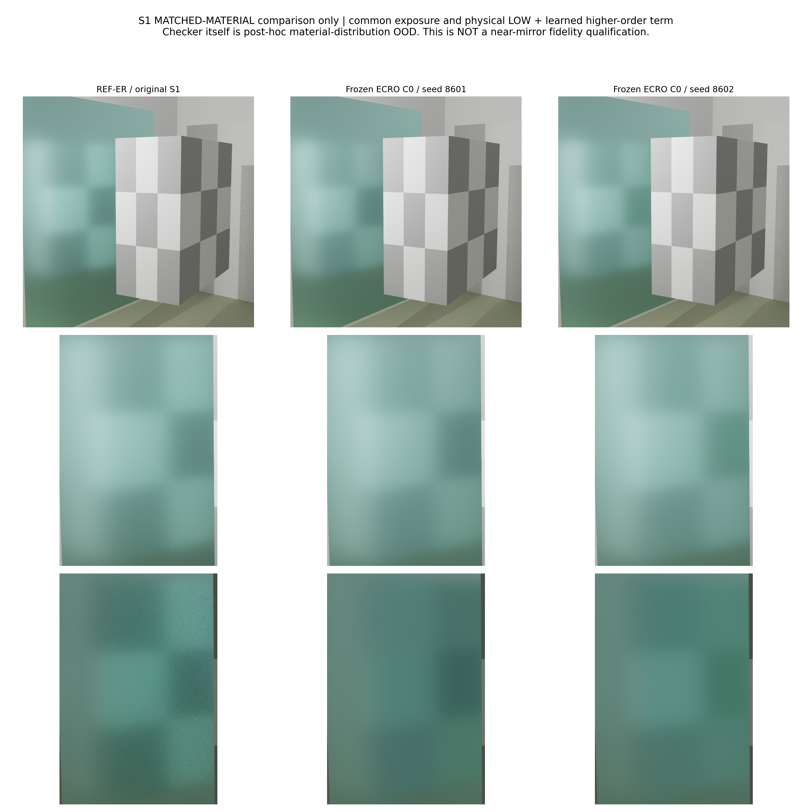

Same CK2 geometry, camera, lighting and checker. 1024×1024, 4096 spp per condition. Shared exposure; no denoise. Architecture verdict: NOT APPLICABLE.
The exactly-two-event panel reflection (e2) is qualified for edge/contrast conclusions. Full radiance and higher-order images remain noise-unconverged diagnostics; near-mirror h has 48.7% pixel RMS SEM from rare bright paths.
S1 is the original multilobe frozen ER material. The neutral GGX group changes alpha only; the ideal mirror is a true delta event. Frozen ECRO does not support the new material states.
Ideal mirror scope: its exactly-two-event panel reflection is the qualified edge control. Its full and higher-order images omit light-side point-light delta caustics and are restricted diagnostics, not complete ground truth.









